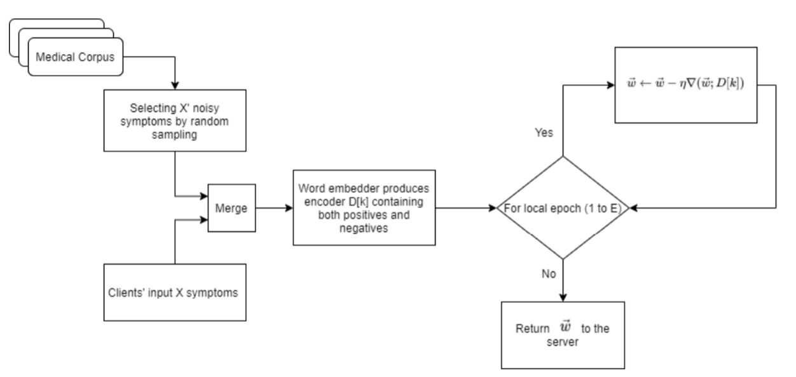
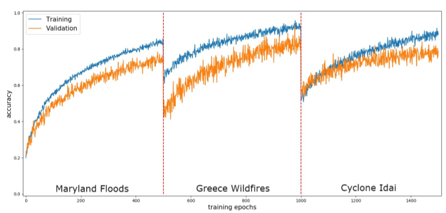
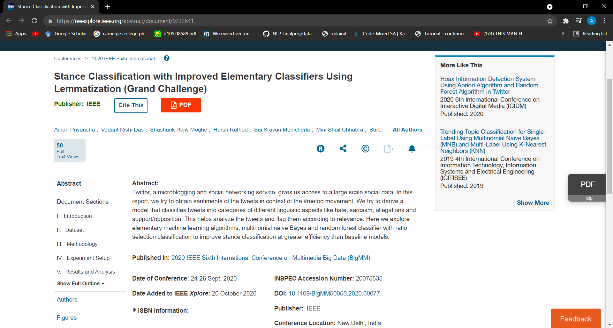
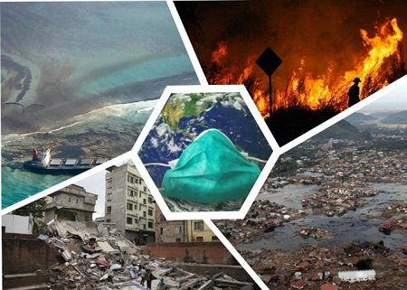
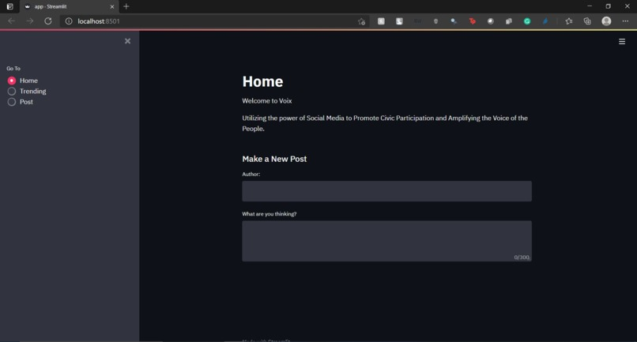
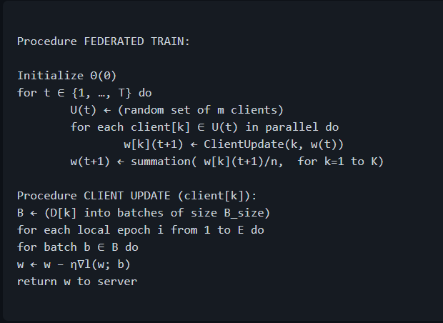
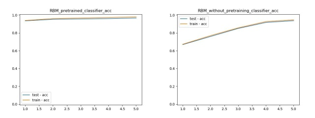
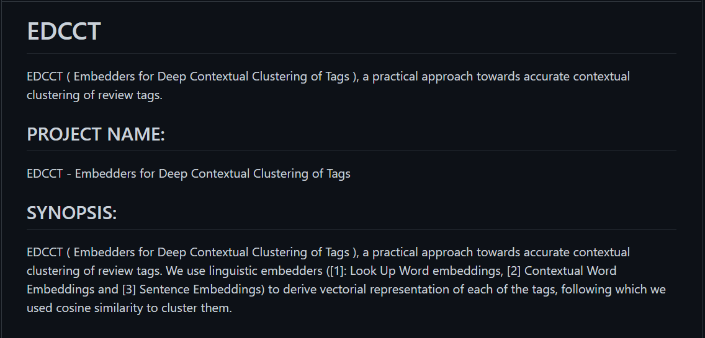
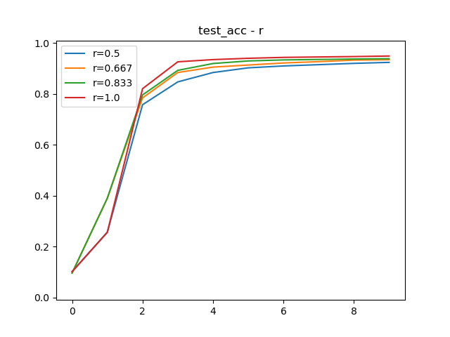

Aman-Priyanshu
B.Tech Undergraduate, Information Technology
Manipal Institute of Technology, India
Take a look at his résumé [pdf].
last updated in March 2021.
NEWS:
MLPCP and DPML Workshop presentation @ICLR'2021!
last updated in March 2021.
NEWS:
MLPCP and DPML Workshop presentation @ICLR'2021!
Aman Priyanshu I am Aman Priyanshu, currently pursuing my undergrad at Manipal Institute of Technology in B.Tech in Information Technology. I am a privacy and deep learning enthusiast with a keen interest in privacy enabled machine learning. I enjoy browsing through papers on ML and PEML, and am always looking to discuss such topics. I am captivated by the concepts of ethics in AI and the relevance of an individual's privacy when it comes to training large models(such as recommender/health systems). I am also fascinated by bio-inspired machine learning as well asynchronity within NNs.
Recently, my research focuses on privacy enabled machine learning and interpretability. I enjoy learning about their implications in Medical Data and Health in AI, I want to pursue an academic career in research and development towards ethics in AI while working with privacy and interpretability. I also wish to look at Indian culture and language through the lens of AI.
Recently, my research focuses on privacy enabled machine learning and interpretability. I enjoy learning about their implications in Medical Data and Health in AI, I want to pursue an academic career in research and development towards ethics in AI while working with privacy and interpretability. I also wish to look at Indian culture and language through the lens of AI.
FedPandemic: A Cross-Device Federated Learning Approach Towards Elementary Prognosis of Diseases During a Pandemic
Aman Priyanshu, and
Rakshit Naidu.
Abstract: The amount of data, manpower and capital required to understand, evaluate and agree on a group of symptoms for the elementary prognosis of pandemic diseases is enormous. In this paper, we present FedPandemic, a novel noise implementation algorithm integrated with cross-device Federated learning for Elementary symptom prognosis during a pandemic, taking COVID-19 as a case study. Our results display consistency and enhance robustness in recovering the common symptoms displayed by the disease, paving a faster and cheaper path towards symptom retrieval while also preserving the privacy of patient's symptoms via Federated learning.
DPML and MLPCP workshops at ICLR'21
@misc{priyanshu2021fedpandemic, title={FedPandemic: A Cross-Device Federated Learning Approach Towards Elementary Prognosis of Diseases During a Pandemic}, author={Aman Priyanshu and Rakshit Naidu}, year={2021}, eprint={2104.01864}, archivePrefix={arXiv}, primaryClass={cs.DC} }

Continual Distributed Learning for Crisis Management
Aman Priyanshu,
Mudit Sinha, and
Shreyans Mehta.
Abstract: Social media platforms such as Twitter provide an excellent resource for mobile communication during emergency events. During the sudden onset of a natural or artificial disaster, important information may be posted on Twitter or similar web forums. This information can be used for disaster response and crisis management if processed accurately. However, the data present in such situations is ever-changing, and considerable resources during such crisis may not be readily available. Therefore, a low resource, continually learning system must be developed to incorporate and make NLP models robust against noisy and unordered data. We utilise regularisation to alleviate catastrophic forgetting in the target neural networks while taking a distributed approach to enable learning on resource-constrained devices. We employ federated learning for distributed learning and aggregation of the central model for continual deployment.
IEEE-SBM Paper Presentation, Manipal
@misc{priyanshu2021continual, title={Continual Distributed Learning for Crisis Management}, author={Aman Priyanshu and Mudit Sinha and Shreyans Mehta}, year={2021}, eprint={2104.12876}, archivePrefix={arXiv}, primaryClass={cs.LG} }

Stance Classification with Improved Elementary Classifiers Using Lemmatization (Grand Challenge)
Aman Priyanshu,
Vedant Rishi Das,
Sarthak Shastri,
Harsh Rathore,
Mini Shahil Chhabra,
Sai Sravan Medicherla, and
Shashank Rajiv Mogh.
Abstract: Twitter, a microblogging and social networking service, gives us access to a large scale social data. In this report, we try to obtain sentiments of the tweets in context of the #metoo movement. We try to derive a model that classifies tweets into categories of different linguistic aspects like hate, sarcasm, allegations and support/opposition. This helps analyze the tweets and flag them according to relevance. Here we explore elementary machine learning algorithms, multinomial naive Bayes and random forest classifier with ratio selection classification to improve stance classification at greater efficiency than baseline models.
2020 IEEE Sixth International Conference on Multimedia Big Data (BigMM)
@INPROCEEDINGS{9232641, author={Priyanshu, Aman and Das, Vedant Rishi and Rajiv Moghe, Shashank and Rathod, Harsh and Medicherla, Sai Sravan and Shail Chhabra, Mini and Shastri, Sarthak}, booktitle={2020 IEEE Sixth International Conference on Multimedia Big Data (BigMM)}, title={Stance Classification with Improved Elementary Classifiers Using Lemmatization (Grand Challenge)}, year={2020}, volume={}, number={}, pages={466-470}, doi={10.1109/BigMM50055.2020.00077}}
Experiences
Research Society Manipal
Ai Division Member
Feb. 2021 - Present
Artificial Intelligence Member
Cryptonite
Technical Head
Aug. 2020 - Present
Technical Head of Cryptonite, the ethical hacking student project of Manipal.

Oniria Pets
Machine Learning & Web Crawling
Jan. 2020 - Feb. 2020
Working on web crawling, data mining and followed by data analysis, NLP models as well as big data extraction, cleaning and manipulation.
TensorFlow User Group (TFUG)
Google Code In mentor
Nov. 2020 - Jan. 2020
Mentored Google Code-in students this year under TensorFlow .
Side Projects

DeCrise
Social Media platforms hold the potential to avert and support public utility services for crisis management. We use continual and federated learning to amplify our NLP model.

Voix
An anonymous platform for uplifting communities and generating promoting civic participation. Developing a privacy conserving, user-friendly platform for social good.

FedEEG
EEG technology and analysis offers a great opportunity for developing Brain-Computer-Interface. We use federated learning to train our model while ensuring privacy.

Deep Belief Networks in PyTorch
The aim of this repository is to create RBMs, EBMs and DBNs in generalized manner, so as to allow modification and variation in model types.

EDCCT ( Embedders for Deep Contextual Clustering of Tags )
EDCCT ( Embedders for Deep Contextual Clustering of Tags ), a practical approach towards accurate contextual clustering of review tags.

FedPAQ
An implementation of FedPAQ using different experimental parameters. We will be looking at different variations of how, r(number of clients to be selected), t (local epochs) and s (Quantizer levels)).
GradCAMS
Gradient weighted Class Activation Mapping (Grad-CAM) uses gradients of a particular target that flows through the convolutional network to localize and highlight regions of the target in the image.